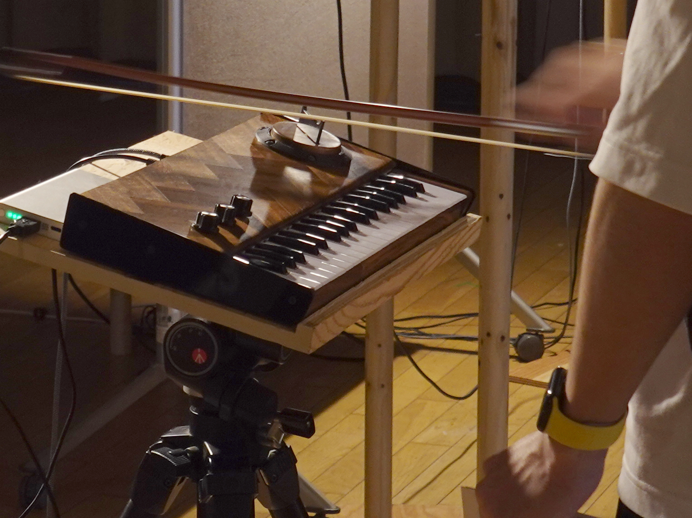

MIDIという美しく緻密な規格の誕生は、電子楽器にとってまさに革命的な出来事でした。音をデジタルで記述する方法が確立されたことで、音楽は「データ」として自由に編集・生成・共有できるものとなり、パソコン一台で誰もが楽曲をつくれる時代が訪れました。私自身も、その恩恵を大いに受けてきた一人です。しかし同時に、音楽や電子楽器がMIDIに強く依存し、「記号」として扱われるようになったことで、そこからこぼれ落ちてしまう何かがあるようにも感じています。
本作「key-bowed」は演奏するという身体的な行為そのものに重きを置き、MIDIに敢えて抗うことで身体的な振る舞いを直接的に演奏表現に反映させることを試みた電子楽器です。鍵盤と弓という別々の伝統的なインターフェイスを組み合わせることで新鮮な演奏体験が得られるだけでなく、弓を当てる角度・位置・強さ、弓を弾く速度などあらゆる行為が演奏表現として音に色濃く反映されるのを体感できるものとなっています。
弓が接触するセンサー部分にはマイクを取り付けたアクリル板を使用しています。MIDI的なアプローチの場合には、弓で擦った際のセンサーの振動の強弱を抽出し、MIDIデータに変換してから音源の強弱信号として与えることになりますが、この変換の際に多くの情報が脱落することとなります。一方「key-bowed」では、弓で擦ったアクリル板の振動の全てを、マイクロプロセッサのプログラムとして構成した「弦振動モデル」に直接与えているため、アクリル板の挙動が一切脱落することなく音の変化として現れる表現力豊かな演奏体験が可能となっています。

「key-bowed」は、浜松市鴨江アートセンター制作場所提供事業「2025年度【前期】アーティスト・イン・レジデンス」のアーティストとしての成果物であり、その成果発表展「記号になる音楽」の中心に位置づけられる作品です。 また、この「key-bowed」は、MIDIがもたらした可能性とMIDIという枠組みでは捉えきれない「演奏すること」「表現すること」を改めて見つめ直すとともに、音楽という芸術（アート）を生み出す道具としての楽器について考え、その楽器を制作する行為自体もまたアート足りうるのかを問い続ける中で生み出された作品でもあります。